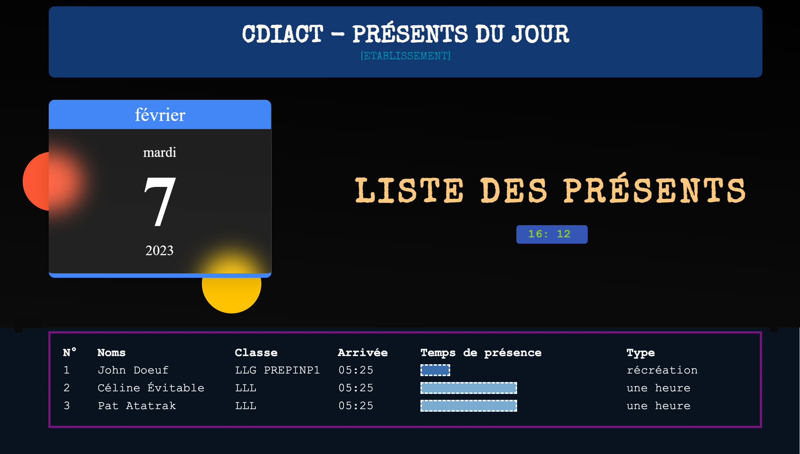
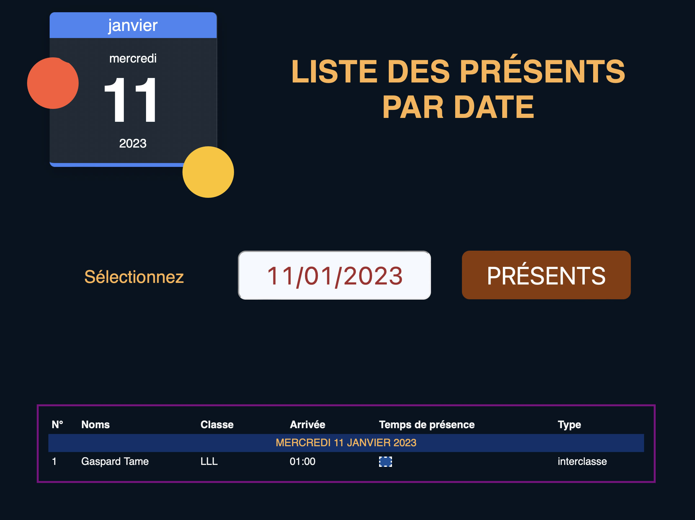
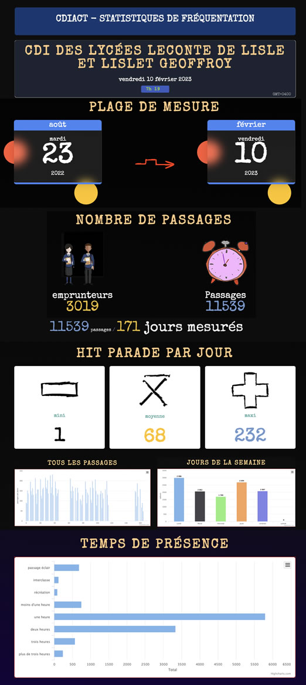
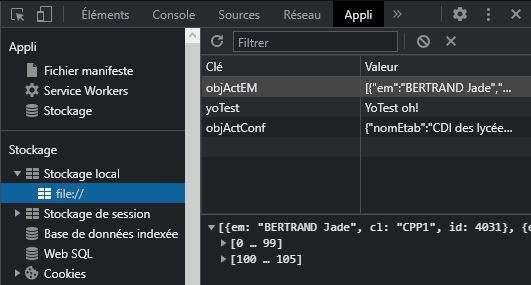

CDIAct est un système de gestion des présences pour les CDI des établissements scolaires. Il permet à chaque élève de s'inscrire en autonomie, pour une durée déterminée en 3 clics.
Comme tous les CDI, nous avions besoin d'un outil pour savoir qui était présent, ne serait qu'en cas d'évacuation d'urgence. Il nous à également semblé intéressant de lier facilement cette application à notre rapport d'activité.
Avec le RGPD et la disparition de l'auteur de CDIStat (diffusé en code propriétaire et donc impossible à ajouter au registre des activités), la solution la plus simple revenait alors à construire notre propre outil.
CDIAct est ainsi le fruit d'un développement maison, testé depuis 5 ans au CDI avec environ 3200 comptes et plus de 500 passages jours, les bonnes années.
Il correspondait essentiellement à nos besoins.
Mis en ligne, de nombreux collègues ont alors manifesté leur intérêt pour cette application. C'est aussi ce qui a motivé le développement actuel.
Avec le recul de ces 4 années d'expérience, pour des raisons de sécurité et de simplicité d'installation, mais aussi pour ne pas monopoliser un poste informatique pour cette seule activité, il fallait faire évoluer CDIAct.
Comment lever les contraintes techniques du serveur Web, de la responsabilité de la sécurisation des données, de la complexité de l'installation elle-même ?
Même si l'objectif n'est pas la production, je n'ai pas le temps d'un suivi ou de développements permanents, il s'agissait donc surtout à la fois d'un défi technique et de la mise en œuvre d'une philosophie du partage.
CDIAct est entièrement gratuit, sans pub et essentiellement développé sur temps libre.
A ces contraintes s'ajoutent l'idée de recyclage (je travaille par exemple sur un lecteur de QR-code à partir d'un vieux téléphone), et donc de réutilisation des postes informatiques.
La technique du Localstorage, autrement dit du stockage des données dans le navigateur même s'est alors
peu à peu imposée.
Les 5 années d'expérience de la première version, la volonté de coder avec le minimum d'octets
— moins est plus —, ont également montré que la mémoire de ces mêmes navigateurs
était largement
suffisante,
très largement même.
Cette
nouvelle
version
permet une installation sans serveur Web et sans connexion.
Elle peut donc
s'effectuer
sur un vieil ordinateur pour le recycler (ancien, sans être une
antiquité non plus, disons… la dernière version réformée).
Il est d'ailleurs déconseillé et inutile de mettre ce poste sur le réseau. Il ne devrait servir qu'à la saisie des présents.
Pour faire fonctionner CDIAct, un navigateur suffit.
Très important !
CDIAct n’est installé que dans le navigateur et c’est pourquoi un navigateur suffit.
L’installation
est reliée à l’adresse (au domaine) sur lequel elle est faite.
Comme pour toute application, installer sur C: ou D: est différent. C’est le fichier index.html du
chemin de l’installation qui est pris en compte pour l’installation, la gestion et les statistiques
et c’est donc toujours cette adresse qu’il faut utiliser.
Pour plus d’informations voir plus loin, tester, installer.
Toutes les données sont, en effet, stockées dans la mémoire du navigateur, largement suffisantes, notamment pour l'autocomplétion, ou les statistiques.
Les capacités des 4 navigateurs testés (Opéra, Firefox, Chrome, Edge) avec 3200 comptes élèves, et plus de 20000 lignes de statistiques ont été très largement suffisantes pour une année d'enregistrements.
A titre d'exemple, 20000 enregistrements occupent environ 10% de la mémoire disponible.
L'installation hors réseau sur un poste qui ne sert qu'à cela est l'un des axes de la sécurité des données. Le poste de saisie ne sert qu'à cela, les élèves n'y restent que les quelques secondes nécessaires à l'inscription.
Tous les ans, en même temps que le nouveau fichier des élèves est mis à jour, il est fortement recommandé d'effacer les anciennes données.
Des sauvegardes régulières sont également très fortement recommandées❕
Même si nous utilisons cette application tous les jours depuis 5 ans au CDI, elle est à considérer comme une version de développement.
Le soucis d'un code le plus simple possible, largement commenté a été présent à toutes les étapes. Tout est fait pour le rendre réutilisable.
Elle est téléchargeable telle que, gratuitement, sans pub et sans traçage, mais aussi, faute de temps, sans suivi ni responsabilité.
Elle n'engage en aucune manière son auteur.
Je n'ai malheureusement que très très peu de temps disponible, ne serait-ce que pour répondre aux mails.
En installant CDIAct, vous acceptez ces conditions.
Les élèves saisissent les 2 ou 3 premières lettres de leur nom de famille. Nom, prénom et classe sont ensuite proposés par autocomplétion et il suffit de cliquer sur la bonne forme.
Un deuxième écran s'affiche pour sélectionner le temps de présence. Le tout est validé par un clic, un écran vide s'affiche.
Le fichier 'presents.html' (du répertoire 'gestion' ou via la page d'accueil) en cliquant tout en bas sur le bouton…
Par défaut,
ce sont
tous les
présents
du
jour.
Ce module permet par exemple, en cas d'évacuation ou pour différentes raisons liées à
l'exercice de
votre
responsabilité en matière de sécurité ou de présence, de générer rapidement la liste des présents et de
faire leur
appel.
Une autre possibilité de connaître la liste des présents, en remontant cette fois-ci beaucoup plus en arrière dans le temps, est le module 'présent-passé' (fichier 'presentsPasse.html' dans 'gestion').
Sur authentification préalable, il permet de générer la liste des présents à une date donnée.
 Le fichier 'stats.html' permet de générer un certain nombre de statistiques qui peuvent se révéler utile par exemple pour la rédaction du rapport d'activité.
Nombre total de passages, par jour, par durée, maxi, mini, moyennes etc.
Il est généré automatiquement.
Plus d'infos dans la vidéo ci-dessous.
Voir la version démo.
En plus de ces 3 modules, le fichier de gestion permet de gérer CDIAct.
Accessible par mot de passe, cette page permet d'installer CDIAct sur un poste (ou plus précisément dans un navigateur), de faire des sauvegardes, de générer, supprimer, restaurer des nouvelles bases ou de vérifier si tout va bien.
C'est le fichier le plus important, il est unique car configuré
pour
votre CDI, et il est généré en ligne via la page
https://emi.re/CDIAct-V2/gestion/installation.html
Une fois généré en ligne, en suivant les étapes indiquées, le fichier 'IDunique.html' est à copier dans le dossier 'gestion'.
CDIAct ne nécessite ni serveur Web, ni connexion
en fonctionnement.
La
partie configuration est réalisée en ligne, puis recopiée sur la machine de
saisie.
Un vieux PC
inutilisé
fera donc largement l'affaire et reste fortement recommandé. L'esprit même de cette application est de
recycler un vieux poste inutilisé (pas trop vieux quand même ⌚).
Les données sont stockées dans "l'objet" localstorage du navigateur.
Ce format a l'avantage de pouvoir être utilisé sans connexion et sans serveur Web et le désavantage de stocker des données en clair et peuvent donc aussi être effacées par malveillance.
Aucun élève ne devrait donc rester devant le poste.
La version 1, en mode serveur, n'est plus suivie.
Vous pouvez, si vous le souhaitez, tester CDIAct-V2 avec un set de données de démo avant de configurer et d'installer la version définitive.
1 Téléchargez CDIAct-V2 et
décompressez l'archive
2 Copiez-collez le répertoire complet sur la machine de test (cela fonctionne également sur une clé USB)
3 Ouvrez le fichier
"gestion-demo.html" du répertoire 'gestion', mot de passe 'démo' et
cliquez sur le bouton "installer la configuration".
Un set de données de test est installé.
Ouvrez ensuite le ficbier "index.html" à la racine de CDIAct et faites vos tests.
Vous avez fait vos différents tests et souhaitez configurer votre propre version ?
Tout se passe en ligne !
Configurer mon CDIAct